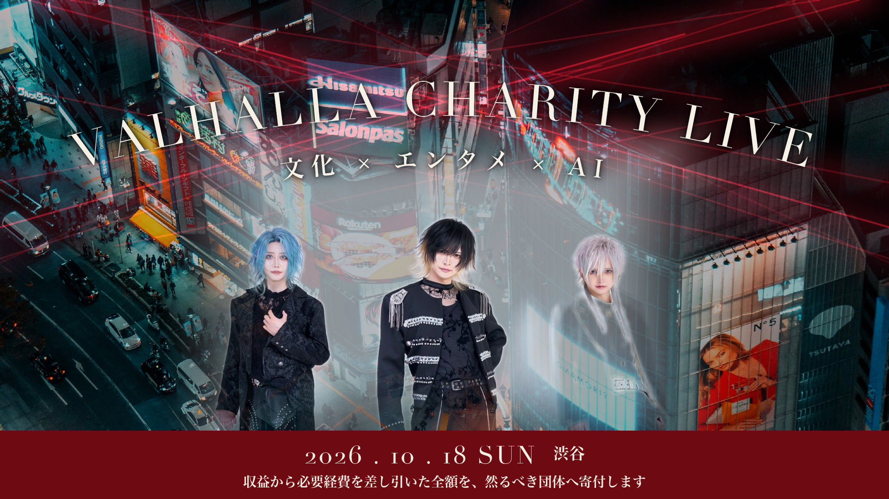
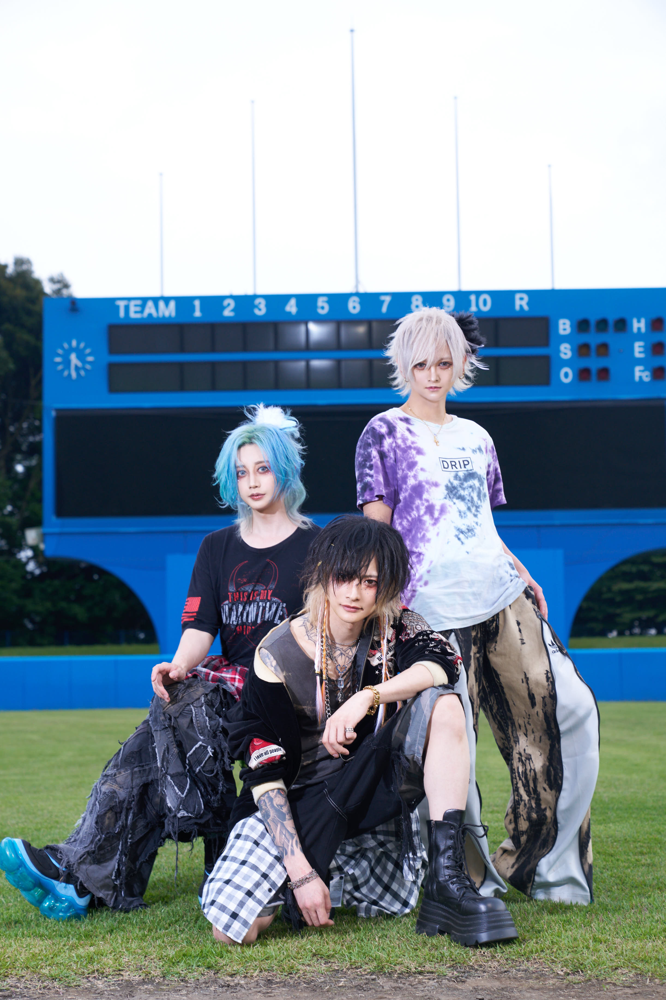
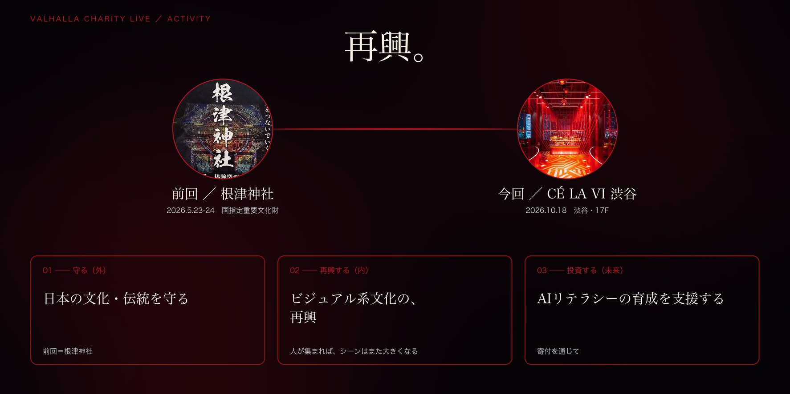
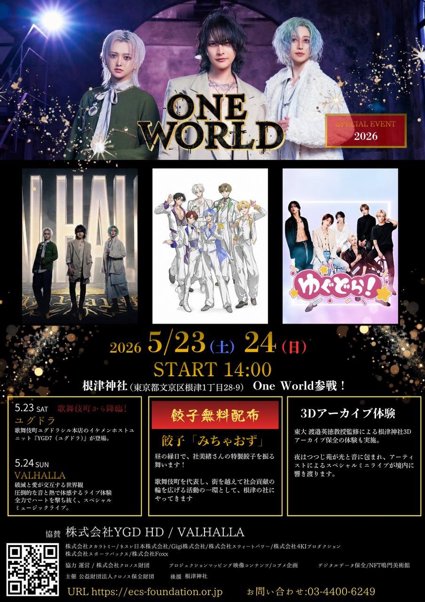
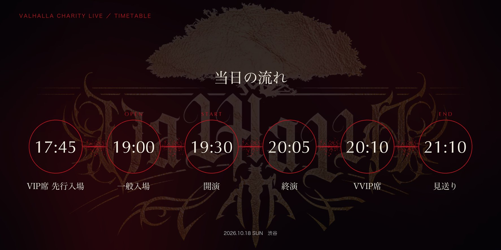
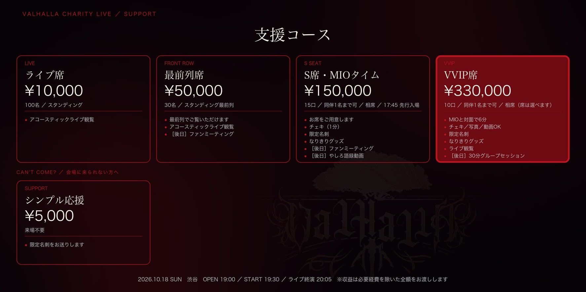
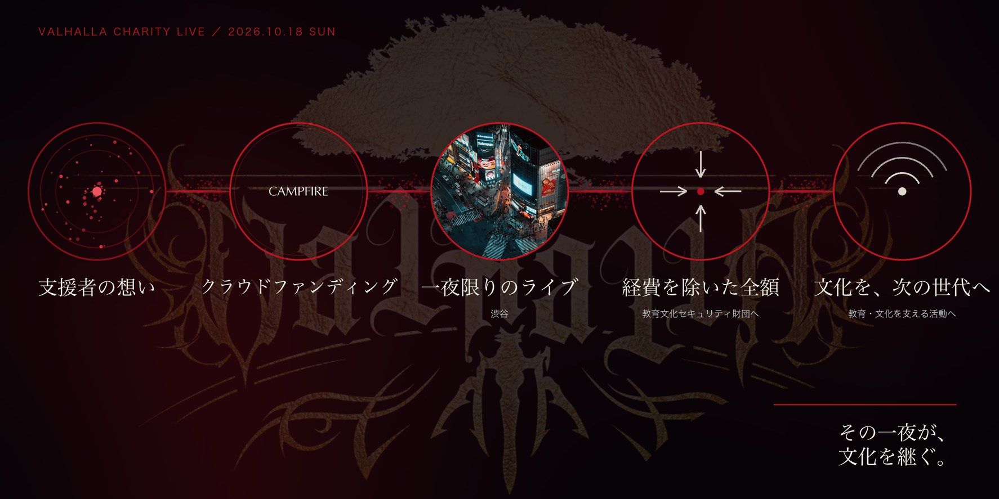

1. ビジュアル系文化を守り、継ぐ。
はじめまして。VALHALLA です。
複数の事業を手がける経営者であり、Group Yggdrasill 代表の MIO（社美緒） を中心に結成された、MIO / RAY / KØU の3人組です。
2026年10月18日（日）、渋谷 CÉ LA VI TOKYO 17F にて、VALHALLA CHARITY LIVE を開催します。
そして、本イベントの収益から必要経費を差し引いた全額を、然るべき団体へ寄付いたします。
このページは、その一夜へのご案内です。

2. なぜ「ビジュアル系文化」なのか
正直に書きます。ビジュアル系は、いま元気とは言えません。
僕たちが憧れて聴いていた頃とくらべて、バンドの数も、集まる人の熱量も、細くなってきている。新しく始める若い子が減って、シーンそのものが小さくなっていく感覚があります。
でも、この文化がつまらなくなったわけじゃない。知る機会と、集まる場所が減っただけです。
だったら、やることは一つでした。もう一度、人が集まる場所をつくること。
化粧をして、髪を染めて、衣装を着てステージに立つ。その姿に心を動かされた人間が、また誰かを連れてくる。そうやってシーンは大きくなってきたし、細くなるときも同じ道をたどります。
だから僕たちは、鳴らす側と、聴きに来る側が出会える場所を用意することにしました。
この夜がその場所です。たまたま隣り合った人同士が、同じ音で盛り上がる。その日はじめて聴いた人が、帰り道に次のライブを探す。繋いだ先に、この文化が続いていきます。
同じ日の昼には、文化継承をテーマにしたチャリティーイベント「WRAPPING THE EARTH TOKYO 2026」が開かれます。守り、次の世代へ渡していく——向いている先は、僕たちと同じです。
その夜を、渋谷の空の上で鳴らします。
3. なぜ、チャリティーライブなのか
はじめに、ひとつだけ書かせてください。
これはホストとしての活動ではありません。VALHALLA というバンドとして、音楽で社会に関わっていきたいという想いから始まっています。
そして——自分ひとりで寄付をすることは、簡単です。
でも僕がやりたいのは、個人で完結させることではありません。
来てくださった方が楽しむことが、そのまま寄付につながる。その形にすることで、これまで寄付に関わってこなかった人たちも巻き込んでいきたい。輪が広がっていくことを、いちばん大切にしたいと考えています。
経営者として事業を営みながら、音楽が好きでバンドを始めました。いくつもの顔を持つなかで、僕が大切にしたいと思うようになったのは、新しい人との出会いから生まれる、体験と価値を届けることです。
ライブの一体感は、その時にしかつくられません。その場にいる全員が、同じ想いになる。
自分だけがする社会貢献ではなく、これからの世界をつくる若者や、同じ想いを持つ人たちを増やしていくこと。それがこれからの世界に必要だと考えています。
私たちと過ごした楽しい時間——その FUN! が、寄付という形で社会貢献につながる。そういう体験を提供して、その価値をより多くの方へ広げていきたいと思っています。
4. なぜ「AIリテラシー」に寄付するのか
支援先に AIリテラシーの育成を選んだのには、はっきりした理由があります。
遠くにある社会課題だから選んだのではありません。私たち自身が、経営の現場で毎日ぶつかっている問題だからです。
〔※ 本人の言葉をそのまま掲載。表記のみ統一（ai → AI／コミニュケーション → コミュニケーション）。最後の段落は別途いただいた版から追加したもの。本人確認を取ること（原文の「僕たち」は前段の「私」に合わせて「私たち」に統一）〕
世界で1番お金と時間を使うツールが AI である以上、日々使う事が当たり前になった時、使い始めて1年満たない今ですら、社内でのコミュニケーションに違和感を感じたり、思考のロスを感じています。
その反面、今まで以上に速度早く、簡単に、そしてプロが要らなくなるような内容をAI がつくってくれることも事実です。
この AI に対して、どう使うか？の倫理観がとっても大切になってくることを日々感じています。
AI は、使われるではなく使いこなし、空いた時間になにをするか？を本当にしたい事を考えられるチャンスと捉え、今の時代だからこそできる時間を楽しんでくれる人たちを増やしていきたいと思っています。
私が経営者をやりながらも、音楽に没頭できるのも、少なからず AI の力を借りているからと思う分、より AI を追求し、学び、それを新しい体験や価値を生む時間に変えて行きたいと思っています。
AI が何でも答えてくれる時代に、わざわざ人が集まって、生の音を浴びる意味は何なのか。私たちは、そこに意味があると思っています。だから音楽をやるし、だから人と関わる力を大事にしたい。
——MIO（社美緒）
そして私たちはいま、「学ぶ場そのものをつくる」準備を進めています。
支援して終わりにするのではなく、次の世代が学べる場所を自分たちの手でつくる。この夜は、そのはじまりの一歩です。
5. これまでの活動 ── 前回は、根津神社でした

このチャリティーは、今回が初めてではありません。
2026年5月23日（土）・24日（日）、国指定重要文化財・根津神社（東京都文京区）。根津神社が後援した「ONE WORLD SPECIAL EVENT 2026」 に、私たちは協賛・出演者として参加しました。

- 5月23日（土） Group Yggdrasill のユニット YGD7（ユグドラ） が出演
- 5月24日（日） VALHALLA が出演。境内でのスペシャルミュージックライブ
- 昼の縁日では、社美緒の特製餃子「みちゃおず」を無料で配布
- 夜はつつじ苑が光と音に包まれ、境内にミニライブが響きました
- 境内では、根津神社の3Dアーカイブ保全体験も実施されました
歌舞伎町を代表して、街を越えて社会貢献の輪を広げる。その一環として、私たちは根津の社にやってきました。入場は無料。チケットを売るためではなく、文化のある場所に音楽を持ち込むための一日でした。
前回もこの一夜も、主催・共催として並走してくださっているのが前回と同じ主催団体です。根津神社で始まった線は、そのまま今回へつながっています。
そして今回、テーマは「守る」から「未来へ投資する」に移ります。昼の本編が掲げる AIリテラシーの育成を、この夜の収益で支えます。
私たちの活動には、3つの軸があります。
01 ── 守る（外） 日本の文化・伝統を守る … 前回＝根津神社
02 ── 再興する（内） ビジュアル系文化の、再興 … 人が集まれば、シーンはまた大きくなる
03 ── 投資する（未来） AIリテラシーの育成を支援する … 寄付を通じて
伝統を守り、自分たちの文化を継ぎ、未来へ投資する。一度きりのイベントではなく、続けていく活動として組み立てています。
6. イベント概要
- イベント名：VALHALLA CHARITY LIVE
- 日時：2026年10月18日（日） OPEN 19:00 ／ START 19:30 ／ 終演 21:30
- 会場：CÉ LA VI TOKYO（渋谷・17F）
- 住所：東京都渋谷区道玄坂1-2-3 東急プラザ渋谷 17F（渋谷駅直結）
- 出演：VALHALLA（MIO / RAY / KØU）
- 内容：アコースティックライブ ＆ スペシャルタイム
- 主催：VALHALLA
- クラウドファンディング：CAMPFIRE
- 寄付先：然るべき団体〔団体名は開催後に本ページで報告します〕

渋谷駅直結、地上17階。窓の外に渋谷の夜景が広がる室内フロアです。中央にステージを備えた円形フロアと、窓際のバーラウンジ。
ライブから体験タイムまで、この夜のすべてを17Fの室内フロアで行います。フロアの移動はありません。屋外は使用しないため、天候に左右されずに開催できます。
〔※ 貸切かどうかを確定次第ここに明記〕※ ライブ席にはフリードリンク（飲み放題）が付く予定です〔提供時間・内容は最終調整中〕。
当日の流れ

- 19:00 開場
- 19:30 開演（VALHALLA アコースティックライブ）
- 20:00 バンド終了
- 20:10 MIOタイム
- 21:30 終演
7. 出演者
まず、音を聴いてください。
VALHALLA は 12ヶ月連続シングル＆MVリリースを進めています。「BORN IN DESPAIR」はその5作目で、青森ユースサッカーフェスティバルのアンセムにも選ばれました。
〔※ 2本目を載せる場合はここに追加。本文が長くなるので2本までを推奨〕

MIO ／ 社美緒（Guitar・主宰）Group Yggdrasill 会長。歌舞伎町を拠点に全国へ展開。YouTube「Mio Yashiro TV」登録者〔27万〕人。〔本人メッセージ〕

RAY ／ 零 〔担当パート〕〔本人メッセージ〕

KØU ／ コウ 〔担当パート〕〔本人メッセージ〕
8. リターンのご紹介

【ライブ席】10,000円〔100名〕
- アコースティックライブ観覧
【社bot】50,000円〔◯名〕
- 社bot を期間限定でご利用いただけます〔※ 社bot の説明を確定〕
- 【別日】ファンミーティング（対面・30分のグループセッション）〔2026年11月・日程調整中〕
- アコースティックライブ観覧〔※ライブ観覧が付くかを確定〕
【MIOタイム】150,000円〔20席／20:10〜〕
- MIO とのチェキ撮影（お一人1分）／動画撮影OK
- やしろ語録動画（MIO の言葉を1つ選び、本人に語ってもらい撮影）
- 限定名刺（QRコードから限定シャンパンコール動画を視聴できます）
- 【別日】ファンミーティング（対面・30分のグループセッション）〔2026年11月・日程調整中〕
- アコースティックライブ観覧
【VVIP席】330,000円〔10卓／20:30〜〕
- MIO が各卓を5分前後ずつ巡回し、直接お話しします
- 卓へのシャンパンサービス〔銘柄・本数は調整中〕
- チェキ／写真／動画OK
- 限定名刺（QRコードから限定シャンパンコール動画を視聴できます）
- アコースティックライブ観覧
- 当日、MIO と直接お話しいただけるのは VVIP席のみです。
- 【別日】ファンミーティング（対面・30分のグループセッション）〔2026年11月・日程調整中〕
⭐️ VVIP席だけの特典
■ ファンミーティングについて50,000円以上のコース（社bot／MIOタイム／VVIP席）には、すべて別日のファンミーティングが付きます。対面・30分のグループセッション形式です。〔定員・開催回数は §4 参照〕
■ 当日、MIO と直接お話しできるのは VVIP席のみです。MIOタイムはチェキ・動画の撮影、VVIP席は各卓での会話、という違いになります。
※ 物販の実施はありません。※ チケットは電子チケットを2026年10月上旬にメールでお送りします。当日受付にてご提示ください。※ お席は主催者にて指定させていただきます。
9. スケジュール
- 〔2026年9月◯日〕 クラウドファンディング公開
- 2026年10月18日（日） 昼：WRAPPING THE EARTH TOKYO 2026 ／ 夜：VALHALLA CHARITY LIVE（CÉ LA VI 渋谷 17F・19:30 開演）
- 〔2026年10月31日〕 クラウドファンディング終了
- 本番後 リターン発送／お名前掲載／活動報告での収支公開
- 〔2026年11月〕 VVIP席 Zoomグループセッション実施
- 〔2026年11月〕 寄付の実行 ／ 収支・受領証を活動報告で公開
10. 資金の使い道

本イベントの収益から必要経費を差し引いた全額を、然るべき団体へ寄付いたします。
※ 必要経費には、会場費・出演料・機材費・決済手数料が含まれます。
寄付先の団体名、寄付金額は開催後、本ページ（活動報告）にて報告いたします。
出演料について
必要経費には出演料が含まれます。
〔※ ここに実態の説明を入れる。例：「出演料は交通費・衣装等の実費相当のみです」など。金額の大小より、先に自分から書いてあることが効く。実態を確認して確定させること〕
支援金の使いみちは、開催後に費目ごとの実額を活動報告で公開します。
寄付の流れ
1. 本プロジェクトでお預かりした支援金から、必要経費（会場費・出演料・機材費・決済手数料）を精算します2. 差し引いた残りの全額を然るべき団体へ寄付します3. 同団体を通じて、教育・文化を支える活動へ活用されます
イベント終了後、実際の収支（支援総額／各費目の実費／寄付額）と、寄付が完了したことがわかる証憑を、活動報告にて公開します。数字は伏せません。
目標金額：〔3,000,000〕円（All-in方式）※ 目標金額に届かなかった場合もイベントは予定通り開催します。
11. 最後に
ビジュアル系文化の、再興。
私たちが本当に思っているのは、それだけです。
化粧をして、髪を染めて、衣装を着てステージに立つ。この表現に心を動かされた人間が、また誰かを連れてくる。その連鎖がもう一度起これば、シーンはまた大きくなります。
そのために必要なのは、難しい理屈ではなく、人が集まる夜でした。
2026年10月18日。渋谷の空の上で待っています。音楽を聴きに来るつもりで来てください。あなたが来ることが、そのままこのシーンを大きくします。
VALHALLA MIO / RAY / KØU

よくあるご質問
Q1. 昼の「WRAPPING THE EARTH TOKYO 2026」とはどう違いますか？
A. 同じ2026年10月18日に開催される別のイベントです。昼は文化継承をテーマにしたチャリティーイベント、夜は渋谷 CÉ LA VI TOKYO 17F で開催する VALHALLA CHARITY LIVE（主催：VALHALLA）です。ご支援はそれぞれ別のプロジェクトから承っています。〔※通し券の有無を確定〕
Q2. 当日会場へ行けなくても応援できますか？
A. はい。来場を伴わない「シンプル応援」コースを3,000円からご用意しています。
Q3. MIO さん本人が寄付すればいいのでは？
A. 自分ひとりで寄付をすることは簡単です。ただ、私たちがやりたいのは個人で完結させることではありません。来てくださった方が楽しむことが、そのまま寄付につながる——その形にすることで、これまで寄付に関わってこなかった方にも関わっていただきたいと考えています。輪が広がっていくことを、いちばん大切にしています。
Q4. これはホストとしての活動ですか？
A. いいえ。VALHALLA というバンドとして、音楽で社会に関わっていきたいという想いから始まった企画です。当日はアコースティックライブを軸に構成しています。
Q5. 支援金は何に使われますか？
A. 本イベントの収益から必要経費（会場費・出演料・機材費・決済手数料）を差し引いた全額を、然るべき団体へ寄付いたします。寄付先の団体名、寄付金額は開催後、本ページの活動報告にて報告いたします。実際の収支と寄付の証憑もあわせて公開します。
Q6. VVIP席では何ができますか？
A. MIO が各卓を5分前後ずつまわり、直接お話しします。あわせて卓へのシャンパンサービス、チェキ・写真・動画の撮影、限定名刺をご用意しています。
Q7.「やしろ語録動画」とは何ですか？
A. MIO（社美緒）がこれまでに語ってきた言葉の中からお好きな一言をリクエストいただき、その言葉を本人が目の前で語る様子を動画に収められる、MIOタイムの特典です。
Q8. 出演者やプログラムは確定していますか？
A. 現在掲載している内容は準備段階の構成です。会場条件や関係者調整により変更となる場合があります。決定次第、活動報告でお知らせします。
Q9. 参加に年齢や性別の制限はありますか？
A. 〔要確定：会場が酒類提供施設のため20歳以上が妥当／性別制限の有無〕
Q10. 会場での撮影はできますか？
A. MIOタイム・VVIP席では撮影可能です。ライブ中の撮影については〔要確定〕。
Q11. 支援のキャンセルはできますか？
A. CAMPFIRE の規定により、支援後のキャンセル・返金はお受けできません。コース内容をご確認のうえお申し込みください。